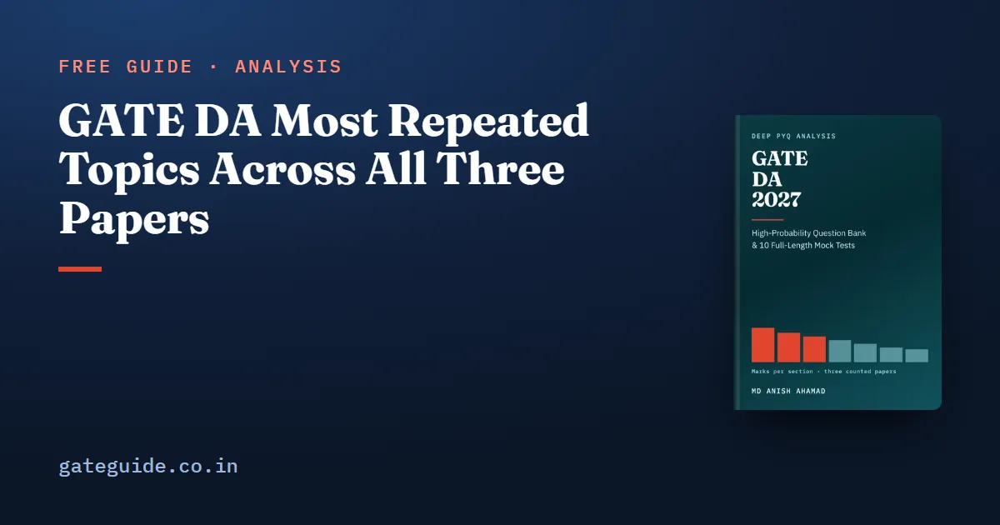

GATE DA Most Repeated Topics Across All Three Papers

The most repeated GATE DA topics are the 25 topic groups that drew marks in every paper so far, 2024, 2025 and 2026. Between them they carry 195 of the 300 marks set. This guide defines what counts as a repeated topic, gives the ranked list, explains the two ways the count is quoted, and warns against reading the list backwards.
In this guide
Key takeaways
- Of 57 topic groups including General Aptitude, 25 drew marks in all three papers. They carry 195 of 300 marks, 65 per cent.
- Of the 52 technical groups alone, 21 did, carrying 155 of 255 technical marks. Same record, different scope.
- Python code traces lead the list with 18 marks. Continuous random variables have 13; logic and search have 10 each.
- All four General Aptitude areas, apart from data interpretation, appear in every paper.
- A topic missing from the list is not safe to skip. Three papers cannot tell rare from not yet drawn.
What "repeated" means here
A topic group is a cluster of related syllabus phrases inside one section, such as "Search algorithms: linear and binary search". The GATE DA 2027 book placed every counted question in exactly one group.
A group is repeated in every paper when it drew marks in 2024, 2025 and 2026. That is three papers, from three different setting institutes, with no gap. It is the clearest pattern three papers can show.
Two counts, one record
You will see two figures quoted for the same idea, and both are right.
| Scope | Groups | In all three papers | Marks they carry |
|---|---|---|---|
| Technical sections only | 52 | 21 | 155 of 255 |
| Including General Aptitude | 57 | 25 | 195 of 300 |
Worked example: checking the two counts agree
The four extra groups in the wider count are General Aptitude areas that appeared every year: quantitative computation (15 marks), spatial (9), analytical (8) and verbal (8). They add marks.
As shares, the technical core is of the technical marks, and the wider list is of the paper. This guide ranks the wider list of 25, because General Aptitude marks count on the day.
Remember: When you quote "the repeated topics", say which count you mean: 21 technical groups, or 25 including General Aptitude.
The ranked list
Marks are the three papers added together.
| Rank | Topic group | Section | Marks |
|---|---|---|---|
| 1 | Programming in Python (code and pseudocode traces) | Programming | 18 |
| 2 | Quantitative aptitude: computation, geometry, statistics, probability | General Aptitude | 15 |
| 3 | Continuous random variables: uniform, exponential, CDF | Probability | 13 |
| 4 | Logic: propositional and predicate | Section 7 | 10 |
| 5 | Search: uninformed, informed, adversarial | Section 7 | 10 |
| 6 | Spatial aptitude | General Aptitude | 9 |
| 7 | Graph theory and graph algorithms | Programming | 9 |
| 8 | Maxima and minima | Calculus | 8 |
| 9 | Relational algebra and tuple calculus | Database | 8 |
| 10 | Analytical aptitude | General Aptitude | 8 |
| 11 | Verbal aptitude | General Aptitude | 8 |
| 12 | Classification problems and linear discriminants | Machine Learning | 8 |
| 13 | Projection, orthogonal, idempotent and partition matrices | Linear Algebra | 7 |
| 14 | Poisson, normal, t and chi-squared distributions | Probability | 7 |
| 15 | Normal form and functional dependencies | Database | 6 |
| 16 | SQL | Database | 6 |
| 17 | Clustering: k-means, k-medoid, hierarchical | Machine Learning | 6 |
| 18 | Multi-layer perceptron and feed-forward networks | Machine Learning | 6 |
| 19 | Counting, axioms, sample space and events | Probability | 6 |
| 20 | Eigenvalues, eigenvectors and determinant | Linear Algebra | 5 |
| 21 | Conditional and joint probability, Bayes' theorem | Probability | 5 |
| 22 | Basic sorting: selection, bubble, insertion | Programming | 5 |
| 23 | Limit | Calculus | 4 |
| 24 | Vector space, subspaces, linear independence | Linear Algebra | 4 |
| 25 | Search algorithms: linear and binary search | Programming | 4 |
Every technical section has at least two groups on the list. That is a reason to cover every section, not to drop the small ones.
What the list says, section by section
Programming has four groups, led by code tracing. The skill under most of these marks is running a short program by hand and writing the state down.
Probability and Statistics has four. Inside continuous random variables, the exponential distribution was set in every paper.
Section 7 has two, and they are the whole of its search and logic. Within search, adversarial search (minimax and alpha-beta) appeared in all three papers.
Database has three: relational algebra with tuple calculus, SQL and normal forms. Its total swung from 7 to 18, but this core held.
Machine Learning has three: classification problems, neural networks and clustering. One neural network question, at two marks, appeared every year.
Linear Algebra has three, and Calculus two: maxima and minima, and limits.
Trap: Rank 25 is not "less important" than rank 1 in the sense of skippable. Four marks over three papers is still a topic every setter so far has used.
What the list does not tell you
Absence is not safety
A low paper count is much weaker evidence than a high one. With three papers, a topic set once is as consistent with rare as with not yet drawn. Several Machine Learning methods, such as k-nearest neighbour and decision trees, appeared once each.
The count can also hide a skill. Calculus in 2026 was counted at 2 marks, but three more questions in that paper, 5 marks, used calculus as the working tool and were counted where their subject sat. Read the list as "these are certain", never as "everything else is optional".
Repetition is not a forecast
GATE 2027 is set by IIT Madras, which has never set a DA paper. The guide to the organising institute explains why no institute pattern can be read from three papers. These are high-priority topics, not promised questions.
In one line: Know these 25 cold, then read every other named topic, including the four groups no paper has used.
How to use the list
- Make the 25 groups your first pass, heaviest first within each section.
- Practise them in the question shapes the papers used: traces, small computations, MSQ statements. The marking scheme guide, common to every GATE paper, explains how MSQs are scored.
- Cover the four General Aptitude areas every week with the General Aptitude guide.
- Then read the named topics with no counted history: confidence intervals and tests, LU decomposition, linked lists.
- Leave time for mocks before the exam; the exam dates guide has the schedule.
This guide gives the ranked list. The GATE DA 2027 book gives the topic table for every section, cites every repeated question by year and number, and has worked questions written on each group.
Quick revision
- 25 of 57 groups (with GA) appeared in all three papers: 195 of 300 marks.
- 21 of 52 technical groups did: 155 of 255 technical marks.
- Top three: Python traces 18, quantitative aptitude 15, continuous random variables 13.
- Logic and search: 10 each; adversarial search in every paper.
- Database core: relational algebra, SQL, normal forms.
- Machine Learning core: classification, neural networks, clustering.
- Missing from the list does not mean safe to skip.
Frequently asked questions
What are the most repeated topics in GATE DA?
The topic groups that drew marks in all three papers. Counting General Aptitude, there are 25 of them, led by Python code traces with 18 marks, quantitative aptitude with 15, continuous random variables with 13, and logic and search with 10 each. Together the 25 carry 195 of the 300 marks set so far.
How many GATE DA topics appeared in every paper?
It depends on whether General Aptitude is counted. Of 57 topic groups including General Aptitude, 25 appeared in all three papers, carrying 195 of 300 marks. Of the 52 technical groups alone, 21 did, carrying 155 of the 255 technical marks. Both counts describe the same record.
Can I skip GATE DA topics that appeared only once?
No. With three papers, a topic set once is as consistent with rare as with not drawn yet, and some skills show low counts because their questions were counted in another section. Calculus in 2026 was counted at 2 marks, while 5 more marks in that paper used it as the working tool.
Does repetition mean a GATE DA topic will come in 2027?
No. Repetition across three papers is the strongest pattern the record shows, but it is not a guarantee. GATE 2027 is set by IIT Madras, which has never set a DA paper, so treat these topics as high priority to know cold, not as promised questions.
Sources
- GATE 2027 official website (IIT Madras)
- GATE 2026 DA question paper (IIT Guwahati)
- GATE 2025 DA question paper (IIT Roorkee)
- GATE 2024 DA question paper (IISc Bengaluru)
Dates, fees and the syllabus are set by the GATE 2027 organising institute and can change. Always confirm at gate2027.iitm.ac.in.